JEE Main 2024 (Session 2), 6 Apr Shift 2: worked solutions for review
Questions and options are NTA’s own images; the green option is NTA’s final key. Every solution below was written by Claude
and checked against NTA’s final key. It is not NTA’s solution. Please mark anything unclear or wrong.
Q1 · Mathematics · MCQ · ID 87827055878
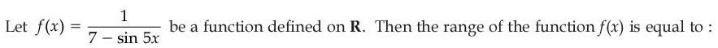
Hint 1: What values can 7 − sin 5x take?
Hint 2: 7 − sin 5x lies in [6, 8]; take reciprocals.
What this tests: Range of a function
1. 6 ≤ 7 − sin 5x ≤ 8.
2. f lies in [1/8, 1/6].
Answer: (4)
If this felt hard: Revise Relations and Functions.
Claude’s answer: 4 · NTA final key: 4 · agrees · Answer recomputed by script (tools/verify_pyq_solutions.py)
Q2 · Mathematics · MCQ · ID 87827055879
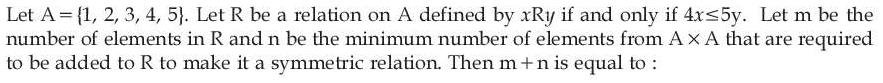
(2) 
(3) 
(4) 
Hint 1: List the pairs with 4x ≤ 5y, then check which reverse pairs are missing.
Hint 2: (y, x) is in R only if 4y ≤ 5x.
What this tests: Relations: symmetric closure
1. Counting by x = 1..5: 5 + 4 + 3 + 2 + 2 = 16 pairs, m = 16.
2. Pairs whose reverse is missing: 4 + 3 + 2 + 0 + 0 = 9, n = 9.
3. m + n = 25.
Answer: (3)
If this felt hard: Revise Relations and Functions.
Claude’s answer: 3 · NTA final key: 3 · agrees · Answer recomputed by script (tools/verify_pyq_solutions.py)
Q3 · Mathematics · MCQ · ID 87827055880
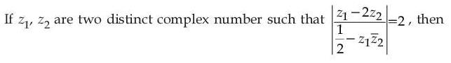
Hint 1: Square both sides and use |w|2 = w w̄.
Hint 2: The cross terms cancel, leaving |z1|2 + 4|z2|2 = 1 + 4|z1|2|z2|2.
What this tests: Modulus of complex numbers
1. Rearranged: (|z1|2 − 1)(1 − 4|z2|2) = 0.
2. So |z1| = 1 or |z2| = 1/2.
Answer: (4)
If this felt hard: Revise Complex Numbers.
Claude’s answer: 4 · NTA final key: 4 · agrees · Answer recomputed with SymPy (tools/verify_pyq_solutions.py)
Q4 · Mathematics · MCQ · ID 87827055881
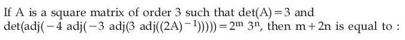
(1) 
(2) 
(4) 
Hint 1: For a 3 × 3 matrix, |adj M| = |M|2 and |kM| = k3|M|. Work from the inside out.
Hint 2: |(2A)−1| = 1/24.
What this tests: Determinant of adjoint
1. |adj((2A)−1)| = 1/576; |3 adj(…)| = 27/576 = 3/64.
2. |adj| = 9/4096; |−3 adj| = −243/4096.
3. |adj| = 310/224; |−4 adj| = −310/218.
4. |adj| = 320/236: m = −36, n = 20, m + 2n = 4.
Answer: (2)
If this felt hard: Revise Determinants.
Claude’s answer: 2 · NTA final key: 2 · agrees · Answer recomputed with SymPy (tools/verify_pyq_solutions.py)
Q5 · Mathematics · MCQ · ID 87827055882
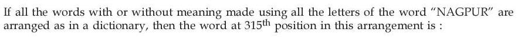
(1)
(2)
(3)
(4)
Hint 1: Letters in order: A, G, N, P, R, U. Count blocks of words by their first letters.
Hint 2: A… and G…: 120 each. Then N followed by A, G, P: 24 each.
What this tests: Dictionary rank
1. Words before N: 240.
2. NA, NG, NP: 72 more (up to 312).
3. NR: NRAGPU (313), NRAGUP (314), NRAPGU (315).
Answer: (2)
If this felt hard: Revise Permutations.
Claude’s answer: 2 · NTA final key: 2 · agrees · Answer recomputed by script (tools/verify_pyq_solutions.py)
Q6 · Mathematics · MCQ · ID 87827055883
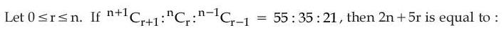
(2) 
(4) 
Hint 1: Use C(n+1, r+1)/C(n, r) = (n+1)/(r+1) and C(n, r)/C(n−1, r−1) = n/r.
Hint 2: (n + 1)/(r + 1) = 11/7 and n/r = 5/3.
What this tests: Binomial coefficient ratios
1. n = 5r/3; 7(5r/3 + 1) = 11(r + 1) gives r = 6, n = 10.
2. 2n + 5r = 50.
Answer: (1)
If this felt hard: Revise Binomial Theorem.
Claude’s answer: 1 · NTA final key: 1 · agrees · Answer recomputed with SymPy (tools/verify_pyq_solutions.py)
Q7 · Mathematics · MCQ · ID 87827055884
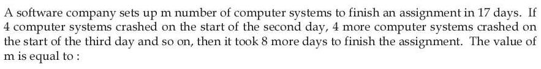
Hint 1: Total work = 17m system-days. Count the system-days actually used over 25 days.
Hint 2: Day k uses m − 4(k − 1) systems.
What this tests: Arithmetic progressions in word problems
1. Sum over 25 days: 25m − 4(0 + 1 + … + 24) = 25m − 1200.
2. 25m − 1200 = 17m, so m = 150.
Answer: (1)
If this felt hard: Revise AP sums.
Claude’s answer: 1 · NTA final key: 1 · agrees · Answer recomputed by script (tools/verify_pyq_solutions.py)
Q8 · Mathematics · MCQ · ID 87827055885
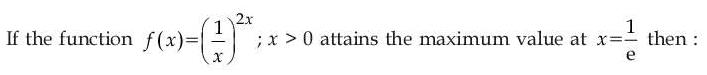
Hint 1: Compare eπ and πe by taking logs.
Hint 2: eπ > πe ⇔ (ln e)/e > (ln π)/π; (ln x)/x is largest at x = e.
What this tests: Comparing powers using monotonicity
1. (ln x)/x decreases for x > e, so (ln e)/e > (ln π)/π, i.e. eπ > πe.
2. Checking the others numerically: e2π > (2π)e and (2e)π < π2e, so options 3 and 4 are false.
Answer: (1)
If this felt hard: Revise Application of Derivatives.
Claude’s answer: 1 · NTA final key: 1 · agrees · Theory question: not computable, needs a teacher’s review
Note: The given f(x) = (1/x)^{2x} does not lead directly to this comparison; the key's option is the standard true fact.
Q9 · Mathematics · MCQ · ID 87827055886
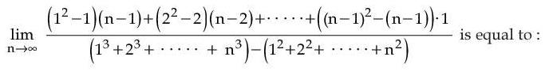
(1) 
Hint 1: Estimate both sums for large n by their leading powers.
Hint 2: Numerator = Σ (k2 − k)(n − k) ≈ n4/12; denominator ≈ n4/4.
What this tests: Limits of sums
1. Σ k2(n − k) ≈ n4(1/3 − 1/4) = n4/12.
2. Σ k3 − Σ k2 ≈ n4/4.
3. Limit = 1/3.
Answer: (2)
If this felt hard: Revise sums of powers.
Claude’s answer: 2 · NTA final key: 2 · agrees · Answer recomputed with SymPy (tools/verify_pyq_solutions.py)
Q10 · Mathematics · MCQ · ID 87827055887
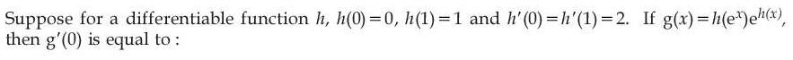
(1) 
(2) 
(3) 
(4) 
Hint 1: Product rule and chain rule.
Hint 2: g' = h'(ex)exeh(x) + h(ex)eh(x)h'(x).
What this tests: Chain rule
1. At x = 0: h'(1)·1·1 + h(1)·1·h'(0) = 2 + 2 = 4.
Answer: (2)
If this felt hard: Revise Continuity and Differentiability.
Claude’s answer: 2 · NTA final key: 2 · agrees · Answer recomputed by script (tools/verify_pyq_solutions.py)
Q11 · Mathematics · MCQ · ID 87827055888
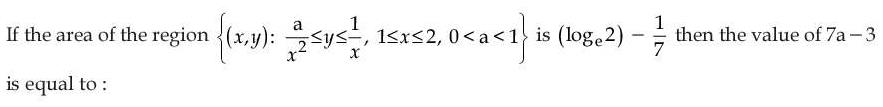
(2) 
(3)
(4) 
Hint 1: Area = ∫ (upper − lower) dx from 1 to 2.
Hint 2: ∫12 (1/x − a/x2) dx = ln 2 − a/2.
What this tests: Area between curves
1. ln 2 − a/2 = ln 2 − 1/7, so a = 2/7.
2. 7a − 3 = −1.
Answer: (1)
If this felt hard: Revise Application of Integrals.
Claude’s answer: 1 · NTA final key: 1 · agrees · Answer recomputed with SymPy (tools/verify_pyq_solutions.py)
Q12 · Mathematics · MCQ · ID 87827055889
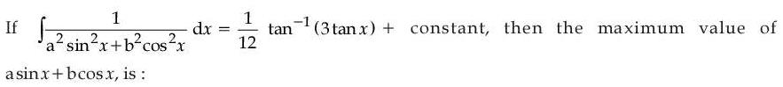
Hint 1: Divide by cos2x and put t = tan x.
Hint 2: ∫ dt/(a2t2 + b2) = (1/(ab)) tan−1(at/b).
What this tests: Standard integrals; maximum of a sin x + b cos x
1. a/b = 3 and ab = 12, so a = 6, b = 2.
2. Max of a sin x + b cos x = √(a2 + b2) = √40.
Answer: (3)
If this felt hard: Revise Integrals.
Claude’s answer: 3 · NTA final key: 3 · agrees · Answer recomputed with SymPy (tools/verify_pyq_solutions.py)
Q13 · Mathematics · MCQ · ID 87827055890
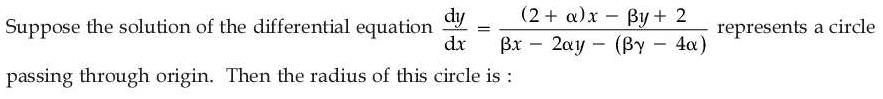
(2) 
(4) 
Hint 1: For a circle, dy/dx = −(x + g)/(y + f): no y in the numerator, no x in the denominator.
Hint 2: So β = 0, and matching coefficients gives α = 2.
What this tests: Differential equation of a circle
1. β = 0; dy/dx = ((2 + α)x + 2)/(−2αy + 4α).
2. For a circle: 2 + α = 2α, α = 2: dy/dx = (4x + 2)/(−4y + 8) = −(x + 1/2)/(y − 2).
3. Circle x2 + y2 + x − 4y = 0 (through origin): r2 = 1/4 + 4 = 17/4.
4. r = √17/2.
Answer: (1)
If this felt hard: Revise Differential Equations and Circles.
Claude’s answer: 1 · NTA final key: 1 · agrees · Answer recomputed with SymPy (tools/verify_pyq_solutions.py)
Q14 · Mathematics · MCQ · ID 87827055891
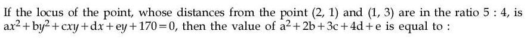
(1) 
Hint 1: Write 16 × (distance to (2,1))2 = 25 × (distance to (1,3))2.
Hint 2: Expand and move all terms to one side, keeping the constant 170.
What this tests: Locus
1. 9x2 + 9y2 + 14x − 118y + 170 = 0.
2. a = 9, b = 9, c = 0, d = 14, e = −118.
3. 81 + 18 + 0 + 56 − 118 = 37.
Answer: (4)
If this felt hard: Revise Straight Lines.
Claude’s answer: 4 · NTA final key: 4 · agrees · Answer recomputed with SymPy (tools/verify_pyq_solutions.py)
Q15 · Mathematics · MCQ · ID 87827055892
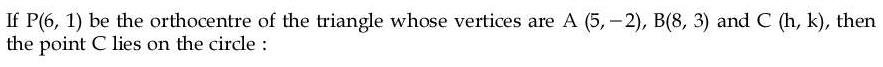
(3)
(4)
Hint 1: The orthocentre lies on each altitude: AP ⊥ BC and BP ⊥ AC.
Hint 2: (1, 3)·(h − 8, k − 3) = 0 and (−2, −2)·(h − 5, k + 2) = 0.
What this tests: Orthocentre
1. h + 3k = 17 and h + k = 3.
2. k = 7, h = −4.
3. h2 + k2 = 65.
Answer: (3)
If this felt hard: Revise Straight Lines.
Claude’s answer: 3 · NTA final key: 3 · agrees · Answer recomputed with SymPy (tools/verify_pyq_solutions.py)
Q16 · Mathematics · MCQ · ID 87827055893
(1)
(2)
(3)
(4)
Hint 1: Each new triangle has half the side. Sum two GPs.
Hint 2: P = 3a(1 + 1/2 + …) = 6a; Q = (√3/4)a2(1 + 1/4 + …) = a2/√3.
What this tests: Infinite GP
1. P2 = 36a2.
2. 36√3 Q = 36a2.
3. P2 = 36√3 Q.
Answer: (3)
If this felt hard: Revise Sequences and Series.
Claude’s answer: 3 · NTA final key: 3 · agrees · Answer recomputed with SymPy (tools/verify_pyq_solutions.py)
Q17 · Mathematics · MCQ · ID 87827055894
(1)
(2) 
(3)
(4)
Hint 1: Find the image P first.
Hint 2: Line (t, 3 + t, 1 − t); foot of perpendicular from Q at t = −1.
What this tests: Image in a line; area by cross product
1. Foot (−1, 2, 2), so P = (−5, 7, 3).
2. PQ × PR = (36, 18, 54) = 18(2, 1, 3).
3. Area λ = 9√14, λ2 = 81 × 14, so K = 81.
Answer: (4)
If this felt hard: Revise Three Dimensional Geometry.
Claude’s answer: 4 · NTA final key: 4 · agrees · Answer recomputed with SymPy (tools/verify_pyq_solutions.py)
Q18 · Mathematics · MCQ · ID 87827055895
(1) 
(2) 
(3) 
(4) 
Hint 1: Compute the cross products one at a time.
Hint 2: a × (i + j) = (1, −1, 1).
What this tests: Vector triple products
1. (1, −1, 1) × i = (0, 1, 1); (0, 1, 1) × i = (0, 1, −1) = b.
2. Projection = a·b/|b| = 2/√2 = √2.
3. Square = 2.
Answer: (2)
If this felt hard: Revise Vector Algebra.
Claude’s answer: 2 · NTA final key: 2 · agrees · Answer recomputed with SymPy (tools/verify_pyq_solutions.py)
Q19 · Mathematics · MCQ · ID 87827055896
(1)
(2)
(3)
(4)
Hint 1: Expand |c − a|2 to find |c|.
Hint 2: |c|2 − 12|c| + 38 = 8.
What this tests: Vector products
1. |c| = 6 + √6 (since |c| ≥ 6).
2. |a × b| = |(1, −1, 5)| = 3√3.
3. |(a × b) × c| = 3√3(6 + √6) sin 60° = (9/2)(6 + √6).
Answer: (4)
If this felt hard: Revise Vector Algebra.
Claude’s answer: 4 · NTA final key: 4 · agrees · Answer recomputed with SymPy (tools/verify_pyq_solutions.py)
Q20 · Mathematics · MCQ · ID 87827055897
(1)
(2)
(3)
(4)
Hint 1: Pick the two addresses, then count onto distributions of 3 letters to them.
Hint 2: C(5,2) × (23 − 2).
What this tests: Probability with onto functions
1. Favourable = 10 × 6 = 60; total = 53 = 125.
2. p = 12/25.
Answer: (3)
If this felt hard: Revise Probability.
Claude’s answer: 3 · NTA final key: 3 · agrees · Answer recomputed by script (tools/verify_pyq_solutions.py)
Q21 · Mathematics · Numerical · ID 87827055898
Hint 1: Each root satisfies x2 = −√2 x + 8. Multiply by xn.
Hint 2: Un+2 + √2 Un+1 = 8Un.
What this tests: Power sums of roots
1. U10 + √2 U9 = 8U8.
2. Ratio = 8/2 = 4.
Answer: 4
If this felt hard: Revise Quadratic Equations.
Claude’s answer: 4 · NTA final key: 4 · agrees · Answer recomputed with SymPy (tools/verify_pyq_solutions.py)
Q22 · Mathematics · Numerical · ID 87827055899
Hint 1: Infinitely many solutions: the coefficient determinant and the replaced determinants vanish.
Hint 2: Replace the z-column by the right sides to get one equation in μ.
What this tests: Consistency of linear systems
1. det[[2, 7, 3],[3, 2, 4],[1, μ, −1]] = 39 + μ = 0, so μ = −39.
2. Coefficient determinant = −119 − 119λ = 0, so λ = −1.
3. λ − μ = 38.
Answer: 38
If this felt hard: Revise Determinants.
Claude’s answer: 38 · NTA final key: 38 · agrees · Answer recomputed with SymPy (tools/verify_pyq_solutions.py)
Q23 · Mathematics · Numerical · ID 87827055900
Hint 1: S is an arithmetico-geometric series with ratio r = 1 + x.
Hint 2: S = r(1 − 61r60 + 60r61)/(1 − r)2.
What this tests: AGP sums
1. At x = 60, r = 61: 3600 S = 61(1 + 59 × 6161) = 3599 × 6161 + 61.
2. a = 3599, b = 61; a + b = 3660.
Answer: 3660
If this felt hard: Revise Sequences and Series.
Claude’s answer: 3660 · NTA final key: 3660 · agrees · Answer recomputed with SymPy (tools/verify_pyq_solutions.py)
Q24 · Mathematics · Numerical · ID 87827055901
Hint 1: f = [x/2] + 3 − [√x]. Find all jumps and check whether any cancel.
Hint 2: [x/2] jumps at 2, 4, 6, 8; [√x] jumps at 1, 4.
What this tests: Continuity of greatest-integer functions
1. At 4 both jump by 1 and cancel: continuous.
2. Discontinuous at 1, 2, 6 and at 8 (left-hand limit differs).
3. Sum = 17.
Answer: 17
If this felt hard: Revise Continuity.
Claude’s answer: 17 · NTA final key: 17 · agrees · Answer recomputed with SymPy (tools/verify_pyq_solutions.py)
Q25 · Mathematics · Numerical · ID 87827055902
Hint 1: ∫03[g(x)] dx = Σ (3 − xk) over the points xk where g crosses each integer.
Hint 2: [x2] steps at √k (k = 1..8); [x2/2] steps at √(2k) (k = 1..4).
What this tests: Integrals of greatest-integer functions
1. ∫[x2] = 24 − (1 + √2 + √3 + 2 + √5 + √6 + √7 + 2√2) = 21 − 3√2 − √3 − √5 − √6 − √7.
2. ∫[x2/2] = 12 − (√2 + 2 + √6 + 2√2) = 10 − 3√2 − √6.
3. Total = 31 − 6√2 − √3 − √5 − 2√6 − √7: a + b + c = 31 − 6 − 2 = 23.
Answer: 23
If this felt hard: Revise Definite Integrals.
Claude’s answer: 23 · NTA final key: 23 · agrees · Answer recomputed with SymPy (tools/verify_pyq_solutions.py)
Q26 · Mathematics · Numerical · ID 87827055903
Hint 1: Is the left side an exact differential of something simple?
Hint 2: d((ey + 1) sin x) = (ey + 1) cos x dx + ey sin x dy.
What this tests: Exact differential equations
1. (ey + 1) sin x = C; at (π/2, 0): C = 2.
2. At π/6: (ey + 1)/2 = 2, ey = 3.
Answer: 3
If this felt hard: Revise Differential Equations.
Claude’s answer: 3 · NTA final key: 3 · agrees · Answer recomputed with SymPy (tools/verify_pyq_solutions.py)
Q27 · Mathematics · ID 87827055904
Left out of the bank: dropped (NTA).
Q28 · Mathematics · Numerical · ID 87827055905
Hint 1: SD = |(a2 − a1)·n|/|n| with n = d1 × d2.
Hint 2: n = (−6, −15, 3), |n| = 3√30.
What this tests: Shortest distance
1. (a2 − a1)·(2, 5, −1) = −42 − 2λ; |n|/3 = √30.
2. |42 + 2λ| = 44: λ = 1 or −43.
3. Largest |λ| = 43.
Answer: 43
If this felt hard: Revise Three Dimensional Geometry.
Claude’s answer: 43 · NTA final key: 43 · agrees · Answer recomputed with SymPy (tools/verify_pyq_solutions.py)
Q29 · Mathematics · Numerical · ID 87827055906
Hint 1: Without replacement: hypergeometric variance.
Hint 2: Var = n(K/N)(1 − K/N)(N − n)/(N − 1).
What this tests: Variance of a hypergeometric variable
1. Var = 5 × (1/4)(3/4)(7/11) = 105/176.
2. n − m = 71.
Answer: 71
If this felt hard: Revise Probability.
Claude’s answer: 71 · NTA final key: 71 · agrees · Answer recomputed with SymPy (tools/verify_pyq_solutions.py)
Q30 · Mathematics · Numerical · ID 87827055907
Hint 1: Cosine rule at A gives α; then find cos C.
Hint 2: (64 + α2 − 49)/(16α) = 2/3.
What this tests: Cosine rule and triple angles
1. 3α2 − 32α + 45 = 0: α = 9 (natural).
2. cos C = (49 + 64 − 81)/112 = 2/7.
3. cos 3C = 4(8/343) − 6/7 = −262/343; 49 cos 3C + 42 = 32/7.
4. m + n = 39.
Answer: 39
If this felt hard: Revise Trigonometry.
Claude’s answer: 39 · NTA final key: 39 · agrees · Answer recomputed with SymPy (tools/verify_pyq_solutions.py)
Q31 · Physics · MCQ · ID 87827055908
(1)
(2)
(3)
(4)
Hint 1: On a banked road with friction, friction acts down the slope at maximum speed.
Hint 2: vmax2 = rg(tan θ + μ)/(1 − μ tan θ).
What this tests: Banking of roads
1. tan 30° = 0.577: v2 = 3000 × 0.777/0.885 = 2637.
2. v ≈ 51.4 m/s.
Answer: (1)
If this felt hard: Revise Laws of Motion.
Claude’s answer: 1 · NTA final key: 1 · agrees · Answer recomputed by script (tools/verify_pyq_solutions.py)
Q32 · Physics · MCQ · ID 87827055909
(1)
(2)
(3)
(4)
Hint 1: Write the SI units: J kg−1 K−1 and J mol−1 K−1.
Hint 2: J = ML2T−2.
What this tests: Dimensions
1. Specific heat: L2T−2K−1. I correct.
2. Gas constant: ML2T−2K−1mol−1, not T−1. II incorrect.
Answer: (3)
If this felt hard: Revise Units and Measurements.
Claude’s answer: 3 · NTA final key: 3 · agrees · Theory question: not computable, needs a teacher’s review
Q33 · Physics · MCQ · ID 87827055910
(1)
(2)
(3)
(4)
Hint 1: Write h = −ut1 + gt12/2 and h = ut2 + gt22/2, and eliminate u.
Hint 2: Multiply the first by t2, the second by t1, and add.
What this tests: Motion under gravity
1. h(t1 + t2) = (g/2)t1t2(t1 + t2), so h = gt1t2/2.
2. Dropped: h = gt2/2, so t = √(t1t2).
Answer: (1)
If this felt hard: Revise Motion in a Straight Line.
Claude’s answer: 1 · NTA final key: 1 · agrees · Answer recomputed with SymPy (tools/verify_pyq_solutions.py)
Q34 · Physics · MCQ · ID 87827055911
(1)
(2)
(3)
(4)
Hint 1: The branch holds up the chain and the body together.
Hint 2: Weight of chain = 100 N.
What this tests: Equilibrium
1. Force = 200 + 100 = 300 N.
Answer: (3)
If this felt hard: Revise Laws of Motion.
Claude’s answer: 3 · NTA final key: 3 · agrees · Answer recomputed by script (tools/verify_pyq_solutions.py)
Q35 · Physics · MCQ · ID 87827055912
(1)
(2)
(3)
(4)
Hint 1: How does each quantity change with X?
Hint 2: χ constant with H; B ∝ x inside a wire, ∝ 1/x outside; solenoid field uniform then falls near the end.
What this tests: Magnetic field graphs
1. A → III, B → I, C → IV, D → II.
Answer: (2)
If this felt hard: Revise Moving Charges and Magnetism.
Claude’s answer: 2 · NTA final key: 2 · agrees · Theory question: not computable, needs a teacher’s review
Note: Susceptibility treated as constant (para/diamagnetic).
Q36 · Physics · MCQ · ID 87827055913
(1)
(2)
(3)
(4)
Hint 1: p = √(2mK).
Hint 2: KE × 36 ⇒ p × 6.
What this tests: Momentum and kinetic energy
1. p becomes 6p: increase = 500%.
Answer: (2)
If this felt hard: Revise Work, Energy and Power.
Claude’s answer: 2 · NTA final key: 2 · agrees · Answer recomputed by script (tools/verify_pyq_solutions.py)
Q37 · Physics · MCQ · ID 87827055914
(1)
(2)
(3) 
(4)
Hint 1: g at depth d: g(1 − d/R).
Hint 2: d = R/4.
What this tests: g below the surface
1. Weight = 300 × 3/4 = 225 N.
Answer: (2)
If this felt hard: Revise Gravitation.
Claude’s answer: 2 · NTA final key: 2 · agrees · Answer recomputed by script (tools/verify_pyq_solutions.py)
Q38 · Physics · MCQ · ID 87827055915
(1)
(2)
(3)
(4)
Hint 1: A soap bubble has two surfaces.
Hint 2: Excess pressure = 2 × 2S/R.
What this tests: Excess pressure
1. ΔP = 4S/R.
Answer: (2)
If this felt hard: Revise Mechanical Properties of Fluids.
Claude’s answer: 2 · NTA final key: 2 · agrees · Theory question: not computable, needs a teacher’s review
Q39 · Physics · MCQ · ID 87827055916
(1)
(2)
(3)
(4)
Hint 1: First law: Q = ΔU + W. Helium is monatomic.
Hint 2: ΔU = n(3/2)RΔT.
What this tests: First law of thermodynamics
1. ΔU = 1.5 × 8.3 × 2 = 24.9 J.
2. W = 48 − 24.9 = 23.1 J.
Answer: (4)
If this felt hard: Revise Thermodynamics.
Claude’s answer: 4 · NTA final key: 4 · agrees · Answer recomputed by script (tools/verify_pyq_solutions.py)
Q40 · Physics · MCQ · ID 87827055917
(1) 
(2) 
(3) 
(4) 
Hint 1: Zero error = (coinciding vernier division) × least count.
Hint 2: LC = MSD/50.
What this tests: Vernier zero error
1. 4 × LC = 0.04 mm gives LC = 0.01 mm.
2. MSD = 0.5 mm, so 20 divisions in 1 cm.
Answer: (2)
If this felt hard: Revise Units and Measurements.
Claude’s answer: 2 · NTA final key: 2 · agrees · Answer recomputed by script (tools/verify_pyq_solutions.py)
Q41 · Physics · MCQ · ID 87827055918
(1)
(2)
(3)
(4)
Hint 1: Count degrees of freedom of a non-rigid (vibrating) diatomic molecule.
Hint 2: 3 translational + 2 rotational + 2 vibrational (KE and PE) = 7.
What this tests: Equipartition
1. Energy per molecule = (7/2)kBT.
2. 10 molecules: 35 kBT.
Answer: (4)
If this felt hard: Revise Kinetic Theory.
Claude’s answer: 4 · NTA final key: 4 · agrees · Answer recomputed by script (tools/verify_pyq_solutions.py)
Note: Uses the molecular k_{B} (not R) as there are 10 molecules, not moles.
Q42 · Physics · MCQ · ID 87827055919
(1)
(2)
(3)
(4)
Hint 1: Identical spheres share charge equally on contact.
Hint 2: After touching P: Q/2 each. Then with S: (Q/2 + Q)/2 = 3Q/4.
What this tests: Coulomb's law and charge sharing
1. New force ∝ (Q/2)(3Q/4) = (3/8)Q2.
2. 16 × 3/8 = 6 N.
Answer: (1)
If this felt hard: Revise Electric Charges and Fields.
Claude’s answer: 1 · NTA final key: 1 · agrees · Answer recomputed by script (tools/verify_pyq_solutions.py)
Q43 · Physics · MCQ · ID 87827055920
(1)
(2)
(3)
(4)
Hint 1: Find the current first.
Hint 2: I = P/V; n = I/e.
What this tests: Current and electrons
1. I = 0.5 A.
2. n = 0.5/1.6 × 10−19 = 3.125 × 1018 = 31.25 × 1017.
Answer: (3)
If this felt hard: Revise Current Electricity.
Claude’s answer: 3 · NTA final key: 3 · agrees · Answer recomputed by script (tools/verify_pyq_solutions.py)
Q44 · Physics · MCQ · ID 87827055921
(1)
(2)
(3)
(4)
Hint 1: |emf| = L ΔI/Δt.
Hint 2: ΔI = 4 A.
What this tests: Self-inductance
1. L = 0.1 × 0.2/4 = 5 × 10−3 H = 5 mH.
Answer: (4)
If this felt hard: Revise Electromagnetic Induction.
Claude’s answer: 4 · NTA final key: 4 · agrees · Answer recomputed by script (tools/verify_pyq_solutions.py)
Q45 · Physics · MCQ · ID 87827055922
(1) 
(2)
(3)
(4)
Hint 1: Intensity = average energy density × c.
Hint 2: I = (1/2)ε0E02c.
What this tests: Intensity of EM waves
1. I = 0.5 × 9 × 10−12 × 6002 × 3 × 108 = 486 W/m2.
Answer: (4)
If this felt hard: Revise Electromagnetic Waves.
Claude’s answer: 4 · NTA final key: 4 · agrees · Answer recomputed by script (tools/verify_pyq_solutions.py)
Q46 · Physics · MCQ · ID 87827055923
(1)
(2)
(3) 
(4)
Hint 1: Lens-maker's formula; for a biconvex lens R2 is negative.
Hint 2: 1/f = (μ − 1)(1/15 + 1/30).
What this tests: Lens-maker's formula
1. 1/20 = (μ − 1)/10.
2. μ = 1.5.
Answer: (2)
If this felt hard: Revise Ray Optics.
Claude’s answer: 2 · NTA final key: 2 · agrees · Answer recomputed by script (tools/verify_pyq_solutions.py)
Q47 · Physics · MCQ · ID 87827055924
(1)
(2)
(3)
(4)
Hint 1: E = hc/λ in eV, then eV0 = E − φ.
Hint 2: E = 1240/300 eV.
What this tests: Photoelectric equation
1. E = 4.13 eV.
2. V0 = 4.13 − 2.13 = 2 V.
Answer: (3)
If this felt hard: Revise Dual Nature.
Claude’s answer: 3 · NTA final key: 3 · agrees · Answer recomputed by script (tools/verify_pyq_solutions.py)
Q48 · Physics · MCQ · ID 87827055925
(1)
(2)
(3)
(4)
Hint 1: Longest Paschen wavelength: n = 4 → 3.
Hint 2: 1/λ = R(1/9 − 1/16) = 7R/144.
What this tests: Hydrogen spectrum
1. λ = 144/(7 × 1.097 × 107) = 1.876 × 10−6 m.
Answer: (2)
If this felt hard: Revise Atoms.
Claude’s answer: 2 · NTA final key: 2 · agrees · Answer recomputed by script (tools/verify_pyq_solutions.py)
Q49 · Physics · MCQ · ID 87827055926
(1)
(2)
(3)
(4)
Hint 1: Energy needed = 6 eV.
Hint 2: λmax = hc/E.
What this tests: Energy and wavelength
1. λ = 1242/6 = 207 nm.
Answer: (1)
If this felt hard: Revise Semiconductor Electronics.
Claude’s answer: 1 · NTA final key: 1 · agrees · Answer recomputed by script (tools/verify_pyq_solutions.py)
Note: The '6 eV' acceptor level is taken as given (unrealistically large).
Q50 · Physics · MCQ · ID 87827055927
(1)
(2)
(3)
(4)
Hint 1: Find the least count, then the three readings.
Hint 2: LC = (1/50) MSD = 0.001 cm. μ = real depth/apparent depth.
What this tests: Travelling microscope
1. Readings: 8.476, 7.161, 4.051 cm.
2. Real depth = 8.476 − 4.051 = 4.425; apparent = 7.161 − 4.051 = 3.110.
3. μ = 1.42.
Answer: (2)
If this felt hard: Revise experimental skills (refractive index of a slab).
Claude’s answer: 2 · NTA final key: 2 · agrees · Answer recomputed by script (tools/verify_pyq_solutions.py)
Q51 · Physics · Numerical · ID 87827055928
Hint 1: Open pipe: fn = nv/(2L).
Hint 2: f1 = 6 × 333/1.2; f2 = 5 × 333/1.8.
What this tests: Organ pipes
1. f1 = 1665 Hz, f2 = 925 Hz.
2. Difference 740 Hz.
Answer: 740
If this felt hard: Revise Waves.
Claude’s answer: 740 · NTA final key: 740 · agrees · Answer recomputed by script (tools/verify_pyq_solutions.py)
Q52 · Physics · Numerical · ID 87827055929
Hint 1: Side-by-side dielectrics act like two capacitors in parallel.
Hint 2: C = C0(K1 + K2)/2 = 2.5 × 10 μF. Force between plates F = CV2/(2d).
What this tests: Capacitor with dielectrics; force between plates
1. C = 25 μF.
2. 8 = 25 × 10−6 V2/(2 × 0.01).
3. V2 = 6400, V = 80 V.
Answer: 80
If this felt hard: Revise Electrostatic Potential and Capacitance.
Claude’s answer: 80 · NTA final key: 80 · agrees · Answer recomputed by script (tools/verify_pyq_solutions.py)
Note: Teacher look: the data are inconsistent (ε_{0}A/d with A = 4 cm^{2}, d = 10 mm is far below 10 μF); the key uses C_{0} = 10 μF as given.
Q53 · Physics · Numerical · ID 87827055930
Hint 1: The ammeter's own resistance is the coil and shunt in parallel.
Hint 2: 240 ∥ 10 = 9.6 Ω.
What this tests: Ammeter resistance
1. Total = 140.4 + 9.6 = 150 Ω.
2. I = 24/150 = 0.16 A = 160 mA.
Answer: 160
If this felt hard: Revise Current Electricity.
Claude’s answer: 160 · NTA final key: 160 · agrees · Answer recomputed by script (tools/verify_pyq_solutions.py)
Q54 · Physics · Numerical · ID 87827055931
Hint 1: Imax = (√I1 + √I2)2, Imin = (√I1 − √I2)2.
Hint 2: Amplitudes add or subtract; amplitude ∝ √intensity.
What this tests: Interference
1. Imax = 9I, Imin = I.
2. Difference 8I.
Answer: 8
If this felt hard: Revise Wave Optics.
Claude’s answer: 8 · NTA final key: 8 · agrees · Answer recomputed by script (tools/verify_pyq_solutions.py)
Q55 · Physics · Numerical · ID 87827055932
Hint 1: The first dip at 10.2 V means excitation energy 10.2 eV.
Hint 2: λ = hc/E.
What this tests: Franck–Hertz experiment
1. λ = 1245/10.2 = 122 nm.
Answer: 122
If this felt hard: Revise Atoms.
Claude’s answer: 122 · NTA final key: 122 · agrees · Answer recomputed by script (tools/verify_pyq_solutions.py)
Q56 · Physics · Numerical · ID 87827055933
Hint 1: How far is the midpoint of a side from the centroid?
Hint 2: Distance = inradius = a/(2√3) = 1/√3 m.
What this tests: Moment of inertia of point masses
1. I = (2 + 4 + 6) × (1/3) = 4 kg m2.
Answer: 4
If this felt hard: Revise Rotational Motion.
Claude’s answer: 4 · NTA final key: 4 · agrees · Answer recomputed by script (tools/verify_pyq_solutions.py)
Q57 · Physics · Numerical · ID 87827055934
Hint 1: Differentiate x2 = 1 + t2 twice.
Hint 2: xv = t, then v2 + xa = 1.
What this tests: Kinematics by differentiation
1. a = (1 − v2)/x = (1 − t2/x2)/x = 1/x3.
2. n = 3.
Answer: 3
If this felt hard: Revise Motion in a Straight Line.
Claude’s answer: 3 · NTA final key: 3 · agrees · Answer recomputed with SymPy (tools/verify_pyq_solutions.py)
Q58 · Physics · Numerical · ID 87827055935
Hint 1: Plane perpendicular to B means M is along B.
Hint 2: W = MB(1 − cos 90°) with M = NIA.
What this tests: Work on a magnetic dipole
1. M = 100 × 10−3 × 5 × 10−3 = 5 × 10−4 A m2.
2. W = 5 × 10−4 × 0.2 = 10−4 J = 100 μJ.
Answer: 100
If this felt hard: Revise Magnetism.
Claude’s answer: 100 · NTA final key: 100 · agrees · Answer recomputed by script (tools/verify_pyq_solutions.py)
Q59 · Physics · Numerical · ID 87827055936
Hint 1: Maximum current means resonance.
Hint 2: f = 1/(2π√(LC)).
What this tests: LCR resonance
1. 2π√(LC) = 2√(π2LC) = 2√(10 × 0.1 × 2.5 × 10−9) = 10−4.
2. f = 104 Hz = 10 × 103 Hz.
Answer: 10
If this felt hard: Revise Alternating Current.
Claude’s answer: 10 · NTA final key: 10 · agrees · Answer recomputed by script (tools/verify_pyq_solutions.py)
Q60 · Physics · Numerical · ID 87827055937
Hint 1: Balance forces at the middle; then find the strain from the new length.
Hint 2: 2T sin θ = mg; strain = 1/cos θ − 1 ≈ θ2/2.
What this tests: Young's modulus
1. T = 20/(2 × 0.01) = 1000 N.
2. Strain = 5 × 10−5; stress = 2 × 1011 × 5 × 10−5 = 107 Pa.
3. A = 1000/107 = 1 × 10−4 m2.
Answer: 1
If this felt hard: Revise Mechanical Properties of Solids.
Claude’s answer: 1 · NTA final key: 1 · agrees · Answer recomputed by script (tools/verify_pyq_solutions.py)
Q61 · Chemistry · MCQ · ID 87827055938
(1)
(2)
(3)
(4)
Hint 1: Take 1 L of solution: find the mass of water in it.
Hint 2: Mass of solution 1250 g; NaCl = 3 × 58.5 g.
What this tests: Molarity to molality
1. Water = 1250 − 175.5 = 1074.5 g.
2. m = 3/1.0745 = 2.79 m.
Answer: (1)
If this felt hard: Revise Solutions.
Claude’s answer: 1 · NTA final key: 1 · agrees · Answer recomputed by script (tools/verify_pyq_solutions.py)
Q62 · Chemistry · MCQ · ID 87827055939
(1)
(2)
(3)
(4) 
Hint 1: Count electron domains; for the complex, is NH3 strong field for Co3+?
Hint 2: BrF5: 6 domains. [Co(NH3)6]3+: inner orbital d2sp3.
What this tests: Hybridisation
1. PF5 sp3d but BrF5 sp3d2: I false.
2. SF6 sp3d2 but [Co(NH3)6]3+ d2sp3: II false.
Answer: (2)
If this felt hard: Revise Chemical Bonding and Coordination Compounds.
Claude’s answer: 2 · NTA final key: 2 · agrees · Theory question: not computable, needs a teacher’s review
Q63 · Chemistry · MCQ · ID 87827055940
(1)
(2)
(3)
(4) 
Hint 1: Kp = Kc(RT)Δng.
Hint 2: Δng = 1 − 3/2.
What this tests: Kp and Kc
1. Kp/Kc = (RT)−1/2 = 1/√(RT).
Answer: (1)
If this felt hard: Revise Equilibrium.
Claude’s answer: 1 · NTA final key: 1 · agrees · Answer recomputed by script (tools/verify_pyq_solutions.py)
Q64 · Chemistry · MCQ · ID 87827055941
(1)
(2)
(3) 
(4) 
Hint 1: Classify each redox type.
Hint 2: Two elements joining; one compound breaking up; a metal displacing H; one species both oxidised and reduced.
What this tests: Types of redox reactions
1. A combination (IV); B decomposition (I); C displacement (II); D disproportionation (III).
Answer: (1)
If this felt hard: Revise Redox Reactions.
Claude’s answer: 1 · NTA final key: 1 · agrees · Theory question: not computable, needs a teacher’s review
Q65 · Chemistry · MCQ · ID 87827055942
(1)
(2)
(3)
(4)
Hint 1: Which way does current flow if the external voltage beats the cell?
Hint 2: An opposing external potential larger than Ecell drives the reaction backwards.
What this tests: Electrolytic vs galvanic cells
1. Apply an external opposite potential greater than E°cell.
Answer: (4)
If this felt hard: Revise Electrochemistry.
Claude’s answer: 4 · NTA final key: 4 · agrees · Theory question: not computable, needs a teacher’s review
Q66 · Chemistry · MCQ · ID 87827055943
(1)
(2) 
(3)
(4) 
Hint 1: Recall the flame colours: Li crimson, Na yellow, Rb red-violet, Cs blue.
Hint 2: Shortest wavelength = highest energy: Cs (blue) < Na (yellow) < Li (red) < Rb.
What this tests: Flame emission of alkali metals
1. Li 670.8 (III); Na 589.2 (I); Rb 780.0 (IV); Cs 455.5 (II).
Answer: (2)
If this felt hard: Revise The s-Block Elements (NCERT table).
Claude’s answer: 2 · NTA final key: 2 · agrees · Theory question: not computable, needs a teacher’s review
Q67 · Chemistry · MCQ · ID 87827055944
(1) 
(2) 
(3) 
(4) 
Hint 1: Inert pair effect: lower oxidation states are more stable for heavier elements.
Hint 2: Pb4+ and Tl3+ prefer to gain electrons.
What this tests: Inert pair effect
1. Pb4+ → Pb2+ and Tl3+ → Tl+: oxidising agents.
2. Sn4+ is stable, Sn2+ is reducing, Pb2+ and Tl+ are stable.
3. Count = 2.
Answer: (2)
If this felt hard: Revise The p-Block Elements.
Claude’s answer: 2 · NTA final key: 2 · agrees · Theory question: not computable, needs a teacher’s review
Q68 · Chemistry · MCQ · ID 87827055945
(1)
(2)
(3)
(4)
Hint 1: Check each group 14 statement against NCERT.
Hint 2: Radius and electronegativity do not change regularly down the group.
What this tests: Group 14 trends
1. A, B: not regular. False.
2. C, D, E: true (NCERT).
Answer: (4)
If this felt hard: Revise The p-Block Elements.
Claude’s answer: 4 · NTA final key: 4 · agrees · Theory question: not computable, needs a teacher’s review
Note: D follows NCERT's statement.
Q69 · Chemistry · MCQ · ID 87827055946
(1)
(2)
(3)
(4)
Hint 1: Write the ground-state configurations; watch Cr.
Hint 2: Sc 1, Ti 2, V 3, Cr 6 (3d54s1), Mn 5.
What this tests: Electronic configurations
1. A < D < C < E < B.
Answer: (3)
If this felt hard: Revise Structure of Atom / d-block.
Claude’s answer: 3 · NTA final key: 3 · agrees · Theory question: not computable, needs a teacher’s review
Q70 · Chemistry · MCQ · ID 87827055947
(1)
(2)
(3)
(4)
Hint 1: Ligands are named in alphabetical order (ignoring di/bis).
Hint 2: 'bromido' before 'trimethylphosphine'.
What this tests: IUPAC naming of complexes
1. Dibromido(bis)…: dibromobis(trimethylphosphine)platinum(II).
Answer: (1)
If this felt hard: Revise Coordination Compounds.
Claude’s answer: 1 · NTA final key: 1 · agrees · Theory question: not computable, needs a teacher’s review
Note: Key uses the older 'bromo'.
Q71 · Chemistry · MCQ · ID 87827055948
(1) 
(2) 
(3) 
(4)
Hint 1: In a tetrahedral field e is lower; fill e then t2 (high spin).
Hint 2: Ti(IV) d0, Fe(VI) d2, Fe(III) d5, Co(II) d7.
What this tests: Tetrahedral splitting
1. TiCl4: e0t20 (III). [FeO4]2−: e2t20 (I). [FeCl4]−: e2t23 (IV). [CoCl4]2−: e4t23 (II).
Answer: (1)
If this felt hard: Revise CFT.
Claude’s answer: 1 · NTA final key: 1 · agrees · Theory question: not computable, needs a teacher’s review
Q72 · Chemistry · MCQ · ID 87827055949
(1)
(2)
(3)
(4)
Hint 1: AgCl is white, AgBr pale yellow, AgI yellow. Which dissolves in NH4OH?
Hint 2: AgCl dissolves easily, AgBr with difficulty, AgI not.
What this tests: Tests for halides
1. Pale yellow, sparingly soluble in NH4OH: AgBr, so Br−.
Answer: (2)
If this felt hard: Revise salt analysis.
Claude’s answer: 2 · NTA final key: 2 · agrees · Theory question: not computable, needs a teacher’s review
Q73 · Chemistry · MCQ · ID 87827055950
(1)
(2)
(3)
(4)
Hint 1: Polar compounds stick more strongly to the polar stationary phase.
Hint 2: Rf is always less than 1.
What this tests: Chromatography
1. A polar compound moves less, so its Rf is smaller.
Answer: (4)
If this felt hard: Revise purification methods.
Claude’s answer: 4 · NTA final key: 4 · agrees · Theory question: not computable, needs a teacher’s review
Q74 · Chemistry · MCQ · ID 87827055951
(1)
(2)
(3)
(4)
Hint 1: Which groups donate electrons to the ring and which withdraw?
Hint 2: OCH3 (+R) > CH3 (+I, hyperconjugation) > H > CF3 (−I).
What this tests: Activating and deactivating groups
1. III > I > II > IV.
Answer: (1)
If this felt hard: Revise Hydrocarbons.
Claude’s answer: 1 · NTA final key: 1 · agrees · Theory question: not computable, needs a teacher’s review
Q75 · Chemistry · MCQ · ID 87827055952
(1)
(2)
(3)
(4)
Hint 1: Which isomer has its C–CH3 dipoles cancelling?
Hint 2: trans-2-butene has μ ≈ 0.
What this tests: Geometrical isomers
1. cis-2-butene has a larger dipole moment, so statement 4 is incorrect.
Answer: (4)
If this felt hard: Revise Hydrocarbons.
Claude’s answer: 4 · NTA final key: 4 · agrees · Theory question: not computable, needs a teacher’s review
Q76 · Chemistry · MCQ · ID 87827055953
(1)
(2)
(3)
(4)
Hint 1: Will a secondary carbocation next to a ring CH rearrange?
Hint 2: A hydride shift from the ring carbon gives a tertiary carbocation.
What this tests: Carbocation rearrangement
1. Ionisation gives a secondary cation on the side chain.
2. A 1,2-hydride shift gives the tertiary ring cation.
3. OH−/H2O attacks: 1-propylcyclohexan-1-ol.
Answer: (3)
If this felt hard: Revise Haloalkanes (SN1).
Claude’s answer: 3 · NTA final key: 3 · agrees · Theory question: not computable, needs a teacher’s review
Note: Teacher look: the key assumes S_{N}1 with rearrangement in aqueous NaOH; direct S_{N}2 would give option 1.
Q77 · Chemistry · MCQ · ID 87827055954
(1)
(2)
(3)
(4)
Hint 1: Follow each step: diazotisation, Sandmeyer, Dow process.
Hint 2: Aniline → PhN2Cl → PhCl → PhONa → PhOH.
What this tests: Diazonium salts and the Dow process
1. A = phenol.
Answer: (3)
If this felt hard: Revise Amines and Phenols.
Claude’s answer: 3 · NTA final key: 3 · agrees · Theory question: not computable, needs a teacher’s review
Q78 · Chemistry · MCQ · ID 87827055955
(1)
(2)
(3)
(4)
Hint 1: Reduce, oxidise back to an aldehyde, add HCN, hydrolyse the nitrile.
Hint 2: CH3COOH → CH3CH2OH → CH3CHO → CH3CH(OH)CN → CH3CH(OH)COOH.
What this tests: Cyanohydrins
1. P = 2-hydroxypropanoic acid (lactic acid).
Answer: (1)
If this felt hard: Revise Aldehydes and Carboxylic Acids.
Claude’s answer: 1 · NTA final key: 1 · agrees · Theory question: not computable, needs a teacher’s review
Q79 · Chemistry · MCQ · ID 87827055956
(1)
(2)
(3)
(4)
Hint 1: OCH3 directs ortho/para; para is major. Then where can Br go?
Hint 2: In p-nitroanisole, positions ortho to OCH3 are also meta to NO2.
What this tests: Directing effects
1. A = 4-nitroanisole.
2. Excess Br2/Fe: 2,6-dibromo-4-nitroanisole.
Answer: (4)
If this felt hard: Revise Hydrocarbons.
Claude’s answer: 4 · NTA final key: 4 · agrees · Theory question: not computable, needs a teacher’s review
Q80 · Chemistry · MCQ · ID 87827055957
(1)
(2)
(3)
(4)
Hint 1: Enzymes are specific. Which enzyme hydrolyses maltose?
Hint 2: Maltase hydrolyses maltose.
What this tests: Enzymes
1. B false (enzymes are specific); D false (maltase, not oxidase).
Answer: (1)
If this felt hard: Revise Biomolecules.
Claude’s answer: 1 · NTA final key: 1 · agrees · Theory question: not computable, needs a teacher’s review
Q81 · Chemistry · Numerical · ID 87827055958
Hint 1: In the Bohr model, KE = −E.
Hint 2: Virial theorem for the Bohr atom: E = −KE.
What this tests: Energies in the Bohr model
1. KE = 3.4 eV = 34 × 10−1 eV.
Answer: 34
If this felt hard: Revise Atoms.
Claude’s answer: 34 · NTA final key: 34 · agrees · Answer recomputed by script (tools/verify_pyq_solutions.py)
Q82 · Chemistry · Numerical · ID 87827055959
Hint 1: Count σ bonds + lone pairs on the central atom: 3 means sp2.
Hint 2: sp2 = 3 electron domains: e.g. BF3, C=C carbons, C=O carbon, SO2 (2 bonds + 1 lone pair).
What this tests: Hybridisation
1. sp2: SO2, C2H4, BCl3, HCHO, C6H6, BF3.
2. Count 6.
Answer: 6
If this felt hard: Revise Chemical Bonding.
Claude’s answer: 6 · NTA final key: 6 · agrees · Theory question: not computable, needs a teacher’s review
Q83 · Chemistry · Numerical · ID 87827055960
Hint 1: ΔG = ΔH − TΔS < 0.
Hint 2: T > ΔH/ΔS.
What this tests: Spontaneity
1. T > 400/0.2 = 2000 K.
Answer: 2000
If this felt hard: Revise Thermodynamics.
Claude’s answer: 2000 · NTA final key: 2000 · agrees · Answer recomputed by script (tools/verify_pyq_solutions.py)
Q84 · Chemistry · Numerical · ID 87827055961
Hint 1: Read ΔTf from the graph.
Hint 2: ΔTf = 273.15 − 270.65 = 2.5 K.
What this tests: Freezing point depression
1. m = 2.5/1.86 = 1.344 mol/kg; in 0.1 kg water: 0.1344 mol methanol.
2. Mass = 4.30 g; volume = 4.30/0.792 = 5.43 mL = 543 × 10−2 mL.
Answer: 543
If this felt hard: Revise Solutions.
Claude’s answer: 543 · NTA final key: 543 · agrees · Answer recomputed by script (tools/verify_pyq_solutions.py)
Q85 · Chemistry · Numerical · ID 87827055962
Hint 1: For first order, t = (t1/2/ln 2) ln(a/(a − x)).
Hint 2: t1 uses ln 3, t2 uses ln 5.
What this tests: First-order kinetics
1. t1/t2 = (5/2) × log 3/log 5 = 2.5 × 0.477/0.699 = 1.71.
2. = 17 × 10−1.
Answer: 17
If this felt hard: Revise Chemical Kinetics.
Claude’s answer: 17 · NTA final key: 17 · agrees · Answer recomputed by script (tools/verify_pyq_solutions.py)
Q86 · Chemistry · Numerical · ID 87827055963
Hint 1: Compare the oxidising power of V(V), Cr(VI), Mn(VII) oxo-species.
Hint 2: Oxidising power increases V < Cr < Mn.
What this tests: Oxidising power of oxo-ions
1. VO2+ is the weakest oxidant.
2. V5+ is d0: 0 BM.
Answer: 0
If this felt hard: Revise The d- and f-Block Elements.
Claude’s answer: 0 · NTA final key: 0 · agrees · Theory question: not computable, needs a teacher’s review
Q87 · Chemistry · Numerical · ID 87827055964
Hint 1: A is Ni2+; B is the red nickel dimethylglyoximate.
Hint 2: [Ni(dmgH)2] has two O–H···O hydrogen bonds.
What this tests: Nickel dimethylglyoxime complex
1. Protons in B: 12 CH3 protons + 2 O–H protons.
2. The 2 O–H protons are in H-bonds; 12 are not.
Answer: 12
If this felt hard: Revise Coordination Compounds.
Claude’s answer: 12 · NTA final key: 12 · agrees · Theory question: not computable, needs a teacher’s review
Q88 · Chemistry · Numerical · ID 87827055965
Hint 1: Hyperconjugation needs C–H bonds on a carbon next to the C+.
Hint 2: Check each cation: does a carbon next to C+ carry an sp3 C–H bond?
What this tests: Hyperconjugation
1. Has α-H: tert-pentyl cation, tert-butyl cation.
2. No α-H (or only in-plane sp2 C–H): (t-Bu)2CH+, CH3+, cyclopentadienyl cation, CH2+OCH3, Me2N–CH2+.
3. Count 5.
Answer: 5
If this felt hard: Revise Organic Chemistry: Some Basic Principles.
Claude’s answer: 5 · NTA final key: 5 · agrees · Theory question: not computable, needs a teacher’s review
Q89 · Chemistry · Numerical · ID 87827055966
Hint 1: Nitration of phenetole goes para; then the two free ortho positions are brominated.
Hint 2: Q = 2,6-dibromo-4-nitrophenetole.
What this tests: Directing effects
1. Q has 3 O (1 ether + 2 nitro) and 2 Br.
2. Ratio 1.5 = 15 × 10−1.
Answer: 15
If this felt hard: Revise Hydrocarbons.
Claude’s answer: 15 · NTA final key: 15 · agrees · Theory question: not computable, needs a teacher’s review
Q90 · Chemistry · Numerical · ID 87827055967
Hint 1: 'Remains clear' with Hinsberg's reagent is read as no reaction. Which amine does not react?
Hint 2: Excess benzyl chloride gives tribenzylamine (tertiary).
What this tests: Hinsberg test
1. X = (C6H5CH2)3N.
2. M = 21 × 12 + 21 + 14 = 287.
Answer: 287
If this felt hard: Revise Amines.
Claude’s answer: 287 · NTA final key: 287 · agrees · Theory question: not computable, needs a teacher’s review
Note: Teacher look: a primary amine's sulphonamide also dissolves in the alkali (clear solution); the key reads 'remains clear' as no reaction, i.e. a tertiary amine.